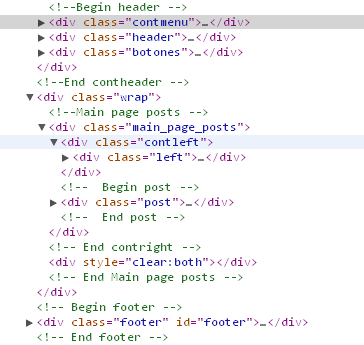
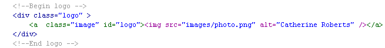
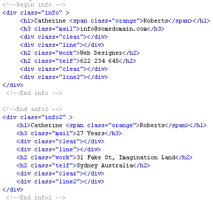

Created: 25/4/2011
By: Invbit
Email: info@invbit.com
Thank you for purchasing my theme. If you have any questions that are beyond the scope of this help file, please feel free to email via my user page contact form here. Thanks so much!
This theme is a liquid layout with two columns. The header is divided in two sections, the div with id "contmenu" contains the navigation, and the div with id "header" contents the other header information. All of the information within the main content area (#main_page_posts) is nested within a div with an id of "post". The sidebar's (#contleft) content is within a div with an id of "left". The general template structure is the same throughout the template. Here is the general structure.
The index.html file contains all code, so if you wish to modify some text you can do it here.
To modify the main photo you would modify the following:
To modify the header content, there are two sections so you would modify the following:
To modify the portfolio content, you can change image at "sponsorFlip" class and change description and url at "sponsorDescription" class and "sponsorURL" class respectively.
If you would like to edit the color, font, or style of any elements in one of these columns, you would do the following:
p {
padding:5px 0px 10px 0;
line-height:17px;
color:#bdb49f; /*Color as you wish*/
}
If you find that your new style is not overriding, it is most likely because of a specificity problem. Scroll down in your CSS file and make sure that there isn't a similar style that has more weight.
So, to ensure that your new styles are applied, make sure that they carry enough "weight" and that there isn't a style lower in the CSS file that is being applied after yours.
I'm using two CSS files in this theme. The first one is a main CSS file. This file contains some general styling, such as anchor tag colors, font-sizes, etc. Keep in mind, that these values might be overridden somewhere else in the file. The second file contains some tricks for IE. Furthermore there are two CSS files for the javascript plugins (colorbox.css and styles.css), I recommend not modify these files.
The main file (style.css) contains all of the specific stylings for the page. The file is separated into sections using:
Main section (the first elements).
You can change the color, padding, font, width page in this section.
If you wish to change font color you can edit:
p {
padding:5px 0px 10px 0;
line-height:17px;
color:#bdb49f; /*Color as you wish*/
}
If you wish to change paragraph padding you can edit:
p {
padding:5px 0px 10px 0; /*Padding as you wish*/
line-height:17px;
color:#bdb49f;
}
In case to change width page, you need to edit:
.wrap {
width:850px; /*Width as you wish*/
margin:0 auto;
}
.contmenu{
width:850px; /*Width as you wish*/
margin:auto;
background:transparent url(../images/imgsup.png) no-repeat 0 0;
height:69px;
}
.header {
width:850px; /*Width as you wish*/
margin:11px auto;
background:transparent url(../images/fondocab.png) no-repeat 0 0;
height:152px;
position:relative;
overflow:hidden;
}
.cont2 {
width:850px; /*Width as you wish*/
margin:0 auto;
background:transparent url(../images/fondocab.png) no-repeat 0 0;
}
/* === Text elements === */
In this section you can modify the header tags attributes.
/* === Navigation === */
In this section you can modify the navigation menu attributes.
/* === Social === */
In this section you can modify the social bookmarks attributes.
/* === Header Content === */
In this section you can modify the header attributes.
/* === Column left === */
In this section you can modify the column left attributes.
/* === Column right === */
In this section you can modify the column right attributes.
/* === Footer === */
In this section you can modify the footer attributes.
If you would like to edit a specific section of the site, simply find the appropriate label in the CSS file, and then scroll down until you find the appropriate style that needs to be edited.
This theme imports nine Javascript files.
I've used the following images, icons or other files as listed.
Once again, thank you so much for purchasing this theme. As I said at the beginning, I'd be glad to help you if you have any questions relating to this theme. No guarantees, but I'll do my best to assist. If you have a more general question relating to the themes on ThemeForest, you might consider visiting the forums and asking your question in the "Item Discussion" section.
Invbit